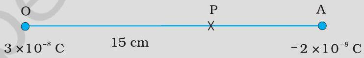
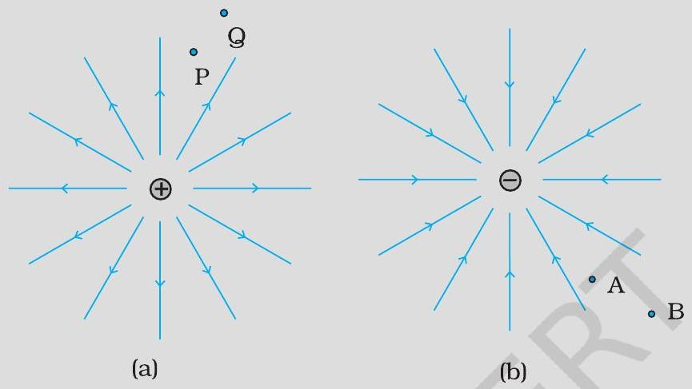
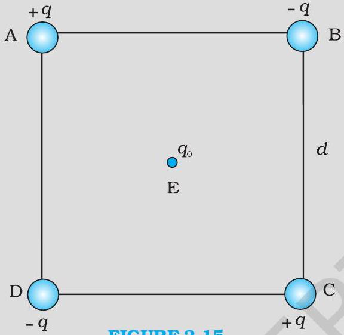
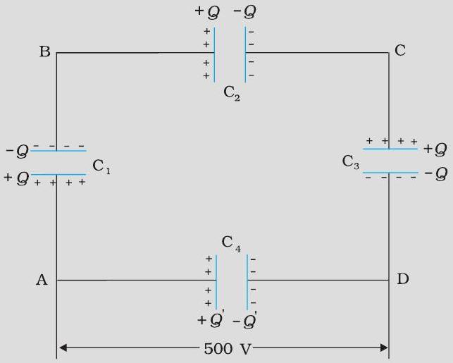
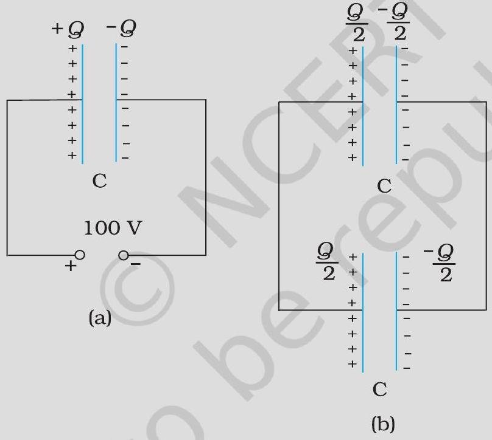
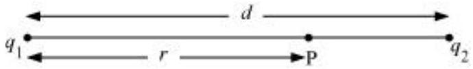
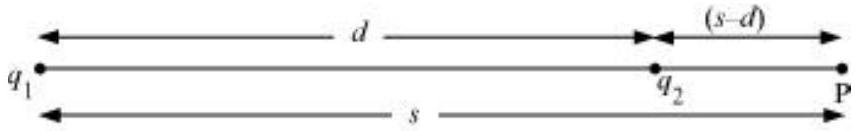
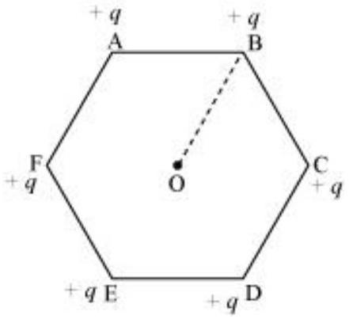
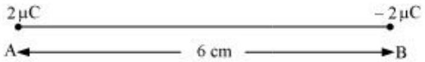

Does the answer depend on the path along which the charge is brought?
Part (a)
Calculate the potential at a point P due to a charge of 4 × 10‑7 C located 9 cm away.
Part (b)
Hence obtain the work done in bringing a charge of 2 × 10‑9 C from infinity to the point P. Does the answer depend on the path along which the charge is brought?
Two charges 3 × 10‑8 C and ‑2 × 10‑8 C are located 15 cm apart. At what point on the line joining the two charges is the electric potential zero? Take the potential at infinity to be zero.

Figures 2.8

Part (a)
Give the signs of the potential difference VP-VO; VB-VA.
Part (b)
Give the sign of the potential energy difference of a small negative charge between the points Q and P ; A and B .
Part (c)
Give the sign of the work done by the field in moving a small positive charge from Q to P .
Part (d)
Give the sign of the work done by the external agency in moving a small negative charge from B to A.
Part (e)
Does the kinetic energy of a small negative charge increase or decrease in going from B to A?
Four charges are arranged at the corners of a square ABCD of side d, as shown in Fig. 2.15. How much extra work is needed to do this?

Part (a)
Find the work required to put together this arrangement.
Part (b)
A charge q0 is brought to the centre E of the square, the four charges being held fixed at its corners. How much extra work is needed to do this?
What would the electrostatic energy of the configuration be?
Part (a)
Determine the electrostatic potential energy of a system consisting of two charges 7 μ C and ‑2 μ C (and with no external field) placed at ( ‑9 cm, 0,0 ) and ( 9 cm, 0,0 ) respectively.
Part (b)
How much work is required to separate the two charges infinitely away from each other?
Part (c)
Suppose that the same system of charges is now placed in an external electric field E = A(1 / r2) ; A = 9 × 105 NC‑1 m2. What would the electrostatic energy of the configuration be?
A molecule of a substance has a permanent electric dipole moment of magnitude 10‑29 C m. A mole of this substance is polarised (at low temperature) by applying a strong electrostatic field of magnitude 106 V m‑1. The direction of the field is suddenly changed by an angle of 60°. Estimate the heat released by the substance in aligning its dipoles along the new direction of the field. For simplicity, assume 100\% polarisation of the sample.
A man standing on the ground touches the same line and gets a fatal shock. Why?
Part (a)
A comb run through one's dry hair attracts small bits of paper. Why? What happens if the hair is wet or if it is a rainy day? (Remember, a paper does not conduct electricity.)
Part (b)
Ordinary rubber is an insulator. But special rubber tyres of aircraft are made slightly conducting. Why is this necessary?
Part (c)
Vehicles carrying inflammable materials usually have metallic ropes touching the ground during motion. Why?
Part (d)
A bird perches on a bare high power line, and nothing happens to the bird. A man standing on the ground touches the same line and gets a fatal shock. Why?
A slab of material of dielectric constant K has the same area as the plates of a parallel-plate capacitor but has a thickness 34 d, where d is the separation of the plates. How is the capacitance changed when the slab is inserted between the plates?
A network of four 10 μ F capacitors is connected to a 500 V supply, as shown in Fig. 2.29. Determine (a) the equivalent capacitance of the network and (b) the charge on each capacitor. (Note, the charge on a capacitor is the charge on the plate with higher potential, equal and opposite to the charge on the plate with lower potential.)

Part (a)
Determine the equivalent capacitance of the network.
Part (b)
Determine the charge on each capacitor.
What is the electrostatic energy stored by the system?

Part (a)
A 900 pF capacitor is charged by 100 V battery [Fig. 2.31(a)]. How much electrostatic energy is stored by the capacitor?
Part (b)
The capacitor is disconnected from the battery and connected to another 900 pF capacitor [Fig. 2.31(b)]. What is the electrostatic energy stored by the system?
Two charges 5 × 10‑8 C and ‑3 × 10‑8 C are located 16 cm apart. At what point(s) on the line joining the two charges is the electric potential zero? Take the potential at infinity to be zero.


A regular hexagon of side 10 cm has a charge 5 μ C at each of its vertices. Calculate the potential at the centre of the hexagon.

Two charges 2 μ C and ‑2 μ C are placed at points A and B 6 cm apart.

Part (a)
Identify an equipotential surface of the system.
Part (b)
What is the direction of the electric field at every point on this surface?
A spherical conductor of radius 12 cm has a charge of 1.6 × 10‑7 C distributed uniformly on its surface. What is the electric field
Part (a)
inside the sphere
Part (b)
just outside the sphere
Part (c)
at a point 18 cm from the centre of the sphere?
A parallel plate capacitor with air between the plates has a capacitance of 8 pF ( 1 pF = 10‑12 F ). What will be the capacitance if the distance between the plates is reduced by half, and the space between them is filled with a substance of dielectric constant 6?
Three capacitors each of capacitance 9 pF are connected in series.
Part (a)
What is the total capacitance of the combination?
Part (b)
What is the potential difference across each capacitor if the combination is connected to a 120 V supply?
Three capacitors of capacitances 2 pF, 3 pF and 4 pF are connected in parallel.
Part (a)
What is the total capacitance of the combination?
Part (b)
Determine the charge on each capacitor if the combination is connected to a 100 V supply.
In a parallel plate capacitor with air between the plates, each plate has an area of 6 × 10‑3 m2 and the distance between the plates is 3 mm. Calculate the capacitance of the capacitor. If this capacitor is connected to a 100 V supply, what is the charge on each plate of the capacitor?
Explain what would happen if in the capacitor given in Exercise 2.8, a 3 mm thick mica sheet (of dielectric constant = 6) were inserted between the plates,
Part (a)
while the voltage supply remained connected.
Part (b)
after the supply was disconnected.
A 12pF capacitor is connected to a 50V battery. How much electrostatic energy is stored in the capacitor?
A 600pF capacitor is charged by a 200V supply. It is then disconnected from the supply and is connected to another uncharged 600 pF capacitor. How much electrostatic energy is lost in the process?